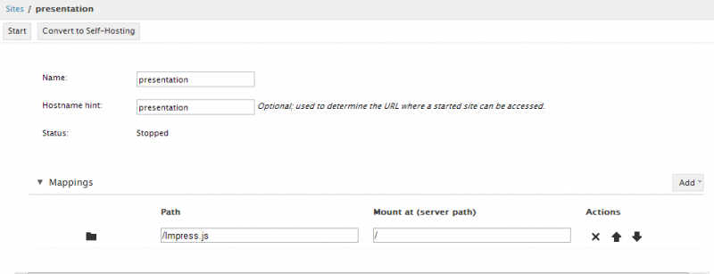

The Edit Site page is used to configure which folder or files are part of a site created on the Sites page. Each site is defined by a series of mappings from folders in Orion to mount points in the deployed application. In the following example, the root folder called Impress.js has been mapped to the root of the deployed site (the root is denoted by '/').

The result of starting this site and visiting it in our browser will be to show the contents of the Impress.js folder.
This document is maintained in a collaborative wiki. If you wish to update or modify this document please visit http://wiki.eclipse.org/Orion/Documentation/User_Guide/Reference/Edit_Site_page